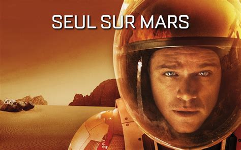

Seul sur Mars (The Martian en version orginale) est un film de science-fiction réalisé par Ridley Scott et sorti en 2015. Il s'agit de l'adaptation du roman du même titre de l'auteur américain Andy Weir sorti en 2014.
